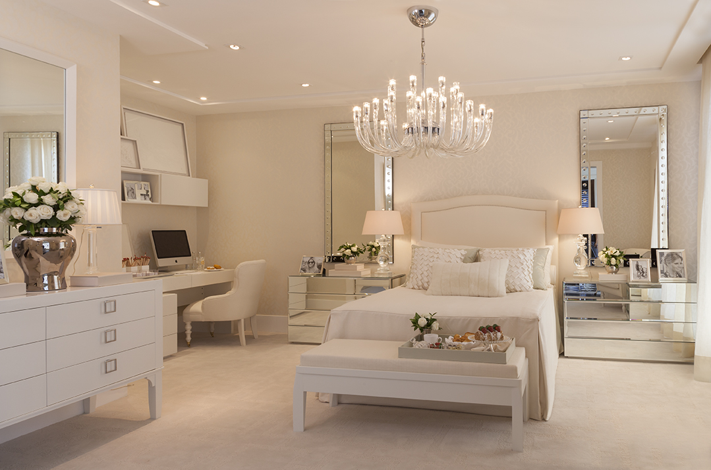

Guia dos estilos de decoração: conheça os 5 principais e veja qual combina com sua casa
A escolha dos seus estilos de decoração prediletos pode influenciar em uma reforma ou até na escolha de um novo lar. Conheça quais são os principais para tomar boas decisões.
Decoração de boho chic
O estilo Boho Chic para escritório é uma expressão única de criatividade e individualidade, fundindo elementos ecléticos e étnicos para criar um ambiente vibrante e acolhedor. Este estilo incorpora uma paleta de cores ricas e terrosas, combinando tons vibrantes com tons neutros para uma atmosfera equilibrada. Móveis vintage, tapeçarias exuberantes e almofadas coloridas adicionam textura e conforto ao espaço de trabalho, enquanto plantas e elementos naturais proporcionam um toque orgânico. A característica distintiva do Boho Chic é a mistura de padrões e texturas, permitindo a coexistência harmoniosa de diferentes estilos. A inclusão de peças artesanais, como tapetes orientais e objetos decorativos feitos à mão, destaca a autenticidade e o caráter único do ambiente. As paredes podem ser decoradas com arte eclética, como pinturas vibrantes, fotografias vintage ou tapeçarias étnicas. A flexibilidade do estilo Boho Chic permite que você personalize seu escritório de acordo com suas preferências pessoais, incentivando a expressão criativa e um ambiente de trabalho inspirador. Este estilo proporciona um refúgio acolhedor, onde a funcionalidade se une à estética, criando um espaço de trabalho que inspira inovação e reflete a personalidade do profissional.
- Boho Chic em escritório
Decoração Minimalista
- Casa Minimalista
“Menos é mais”. Esta é a máxima do estilo de decoração minimalista. E esse conceito costuma orientar tudo o que diz respeito a esse tipo de decoração, desde a escolha das cores – geralmente neutras, como branco, preto e cinza – até a quantidade de móveis e objetos que irão figurar no ambiente. Exagero é palavra proibida no minimalismo. E o interessante desse tipo de proposta é que especialmente os itens escolhidos deixem o ambiente funcional. Nessa linha, móveis multifuncionais são sempre bem-vindos. Ou seja, que possuam mais de uma utilidade. Além disso, a organização e a limpeza são fatores primordiais. Uma vez que um ambiente minimalista tem poucos elementos, é muito fácil perceber quando algo está fora da ordem.
Decoração Retrô
- Casa Retrô
Para quem busca uma decoração que seja autêntica e, ao mesmo tempo, aconchegante, a decoração retrô pode ser a ideal. Ela foi pensada a partir da releitura do passado, principalmente das décadas de de 1950, 60, 70 e 80. Assim, esse estilo de decoração aproveita o design de épocas anteriores ao mesmo tempo que usa a tecnologia e os materiais da atualidade. Ou seja, é uma decoração que preza por peças atuais inspiradas no que já passou. Assim, a nostalgia do passado agrega conforto e, por outro lado, a tecnologia traz praticidade. Uma mistura perfeita para ambientes como a cozinha, por exemplo. Os elementos principais da decoração retrô são:
- Placas decorativas
- Móveis com pés de palito
- Cores vibrantes
- Luminária de chão
- Itens de memória afetiva
Decoração Industrial
- Estilo de sala Industrial
Na década de 1970, a cidade de Nova York lançou para o mundo a tendência da decoração industrial em residências, a partir de um movimento em que as pessoas começaram a encontrar alternativas para moradia em galpões antigos, fábricas velhas ou lofts. E muitos dos elementos já presentes nesses tipos de ambientes industriais foram mantidos como forma de decoração, dando origem ao estilo. Tanto no mobiliário quanto na iluminação e, principalmente, nos revestimentos, a decoração industrial se caracteriza por elementos que, a princípio, podem parecer pesados e rústicos, como:
- Piso de cimento queimado;
- Parede de tijolos aparentes;
- Tubulações de ferro aparentes;
- Cores sóbrias e neutras, em especial o preto e o cinza.
Decoração Clássico
- Quarto Clássico 
Os quartos são ambientes no qual passamos partes importantes do nosso dia, como, por exemplo, a hora de descansar e dormir. Não há nada melhor do que, após um dia cansativo de trabalho, chegar no seu quarto e relaxar, curtindo cada detalhe do cômodo para recarregar as energias do dia-a-dia. Para quem gosta de decoração, o quarto clássico nunca saiu de moda pois é elegante, chique e charmoso.
- Estilo clássico é e sempre será tradicional. Por isso, se quer imprimir esse estilo no quarto clássico, não opte por objetos decorativos ou móveis modernos;
- Cores claras, como branco, bege, gelo, dourado e tons pastéis são ideais para criar a atmosfera ideal para o quarto clássico. Faça combinações complementares, como o bege, dourado, amarelo e azul pastel, por exemplo;
- Luminárias de teto pendentes são peças-chave para garantir o toque que você deseja dar ao quarto clássico. Se o seu quarto for grande, pode apostar em pendentes grandes com bastante adereços de vidro ou pérolas. Opte preferencialmente por tons de dourado ou cobre;
Dicas para Decorar seu Quarto Clássico: